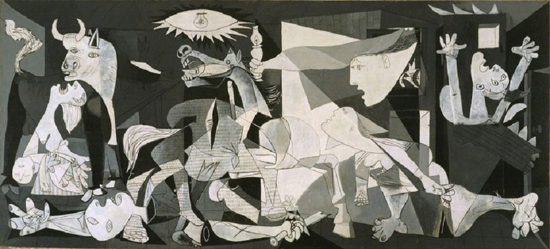

Пабло Пикасо е най-скъпият и краденият художник. Той е създател на кубизма. Когато вижда ужасите от войната, рисува най-известния си шедьовър "Герника" за бомбардировките над мирното испанско градче. Картината е изцяло черно-бяла, без други цветове и се счита за най-трогателната и силна антивоенна картина в историята. За нея, художникът казва "Изкуството не е направено, за да декорира стените на апартаментите. То е мощно оръжие за защита срещу враговете".
Wikipedia